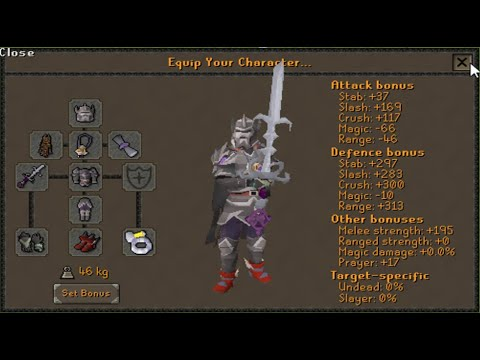

Guia para verzik (tob)
acontinuación les presentamos el gear para verzik (p1). melee method
cabe destacar que esta fase solo se puede completar con metodo de melee

observe el mejor conjunto para mayor dps en esta fase.
acontinuación les presentamos el gear para verzik (p1). melee method
cabe destacar que esta fase solo se puede completar con metodo de melee
observe el mejor conjunto para mayor dps en esta fase.
Esta es una muestra de la peor opcion que puedes usar en el metodo
lo peor en el slot de melee
en esta seccion vamos a explicar la mejor manera del orden de los articulos que debes adquirir

debes seguir el procedimiento paso a paso. y lograras ser como Peter Hausem